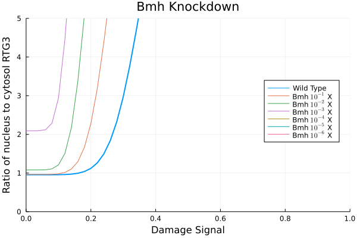
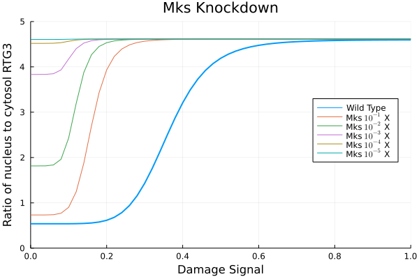
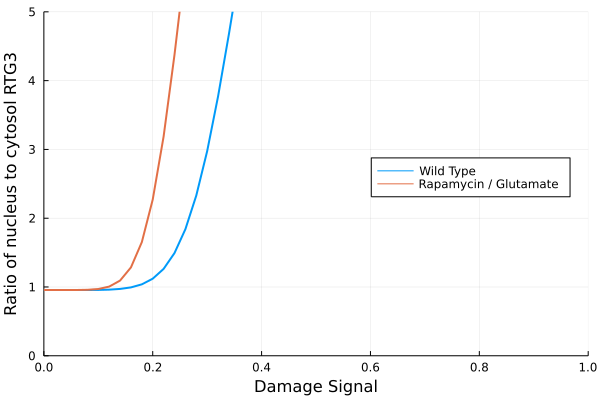
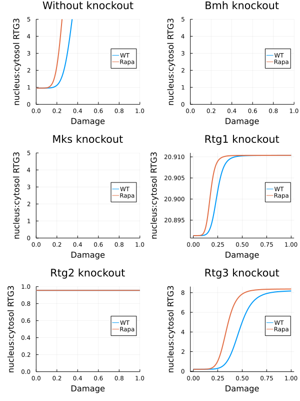
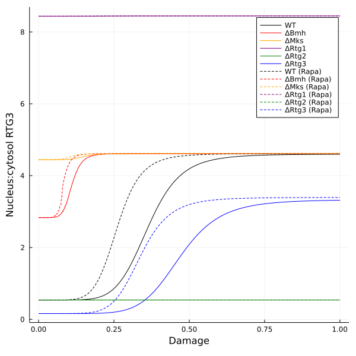

Validations
Contents
Validations#
using Plots
using Plots.PlotMeasures
using ModelingToolkit
using DifferentialEquations
using LaTeXStrings
using RetroSignalModel
import RetroSignalModel as rs
┌ Info: Precompiling RetroSignalModel [8bac15de-65a1-44a4-8b6e-7c4bf648ff0c]
└ @ Base loading.jl:1662
@named sys = RtgMTK(rs.ONE_SIGNAL)
u0 = rs.resting_u0(sys)
ks = load_parameters("solution_rtgM4.csv")[1]
prob = SteadyStateProblem(sys, u0, ks)
# Warm up
sol = solve(prob, DynamicSS(Rodas5()));
psmap = Dict(k => i for (i, k) in enumerate(parameters(sys)))
Dict{Sym{Real, Base.ImmutableDict{DataType, Any}}, Int64} with 30 entries:
k3outA => 22
k3inA => 23
k13I => 11
kBM => 8
ksD => 4
k1in => 21
k3I_c => 13
k13IV => 12
mul_S => 5
k3A_c => 14
kn13_c => 17
k13_n => 19
n_S => 1
k13ID => 10
ksV => 2
k3outI => 24
k2I => 3
k1out => 20
ΣMks => 29
kn2M => 6
k13_c => 16
k3I_n => 15
ΣRtg2 => 27
k2M => 7
knBM => 9
⋮ => ⋮
Bmh partial knockout#
Source: https://github.com/ntumitolab/MitoRetroDynamics/blob/main/validation.ipynb
Initial protein concentrations: Get expression levels: uses data from GSE102475.
idxmulS = psmap[rs.mul_S]
r3nc_wt = map(0.0:0.02:1.0) do s
p = copy(prob.p)
p[idxmulS] = s
sol = solve(remake(prob, p=p), DynamicSS(Rodas5()))
rs.rtg3_nucleus(sol) / rs.rtg3_cytosol(sol)
end
51-element Vector{Float64}:
0.9559495054719874
0.9559495063082027
0.955956953732074
0.9560010502430591
0.956303952032615
0.9576036854585659
0.9616852238808523
0.9719630958487341
0.9942275565808917
1.0386056668729993
1.1209296202022638
1.2635046764881432
1.49353419123713
⋮
11.172586644078622
11.181630394429098
11.18904594788193
11.195154768863599
11.200209466024711
11.204409630791487
11.207913859604727
11.210849052023429
11.213316842501227
11.215399226562047
11.217162460206671
11.218660553644526
plot(0.0:0.02:1.0, r3nc_wt, label="Wild Type", lw=2)
idxBmh = psmap[rs.ΣBmh]
for i in 1:6
r3nc_Δb = map(0.0:0.02:1.0) do s
p = copy(prob.p)
p[idxmulS] = s
p[idxBmh] = prob.p[idxBmh] / 10^i
sol = solve(remake(prob, p=p), DynamicSS(Rodas5()))
rs.rtg3_nucleus(sol) / rs.rtg3_cytosol(sol)
end
plot!(0.0:0.02:1.0, r3nc_Δb, label = string("Bmh ", L"10^{-%$i}", " X"))
end
plot!(legend=:right, title="Bmh Knockdown", xlabel="Damage Signal", ylabel="Ratio of nucleus to cytosol RTG3", xlims=(0.0, 1.0), ylims=(0.0, 5.0))

Mks partial knockdown#
idxΣMks = psmap[rs.ΣMks]
plot(0.0:0.02:1.0, r3nc_wt, label="Wild Type", lw=2)
for i in 1:5
r3nc_Δb = map(0.0:0.02:1.0) do s
p = copy(prob.p)
p[idxmulS] = s
p[idxBmh] = prob.p[idxΣMks] / 10^i
sol = solve(remake(prob, p=p), DynamicSS(Rodas5()))
rs.rtg3_nucleus(sol) / rs.rtg3_cytosol(sol)
end
plot!(0.0:0.02:1.0, r3nc_Δb, label = string("Mks ", L"10^{-%$i}", " X"))
end
plot!(legend=:right, title="Mks Knockdown", xlabel="Damage Signal", ylabel="Ratio of nucleus to cytosol RTG3", xlims=(0.0, 1.0), ylims=(0.0, 5.0))

Rapamycin and glutamate#
kn2M was decreased ten times to simulated enhanced binding of Mks and Rtg2 upon Rapamycin / glutamate addition.
idxkn2M = psmap[rs.kn2M]
r3nc_ra = map(0.0:0.02:1.0) do s
p = copy(prob.p)
p[idxmulS] = s
p[idxkn2M] /= 10
sol = solve(remake(prob, p=p), DynamicSS(Rodas5()))
rs.rtg3_nucleus(sol) / rs.rtg3_cytosol(sol)
end
pl1 = plot(0.0:0.02:1.0, [r3nc_wt r3nc_ra], label=["Wild Type" "Rapamycin / Glutamate"], lw=2, legend=:right,
xlims=(0.0, 1.0), ylims=(0.0, 5.0), xlabel="Damage Signal", ylabel="Ratio of nucleus to cytosol RTG3")

Interactions with protein knockout#
idxmulS = psmap[rs.mul_S]
idxBmh = psmap[rs.ΣBmh]
idxΣMks = psmap[rs.ΣMks]
idxkn2M = psmap[rs.kn2M]
idxΣRtg1 = psmap[rs.ΣRtg1]
idxΣRtg2 = psmap[rs.ΣRtg2]
idxΣRtg3 = psmap[rs.ΣRtg3]
function remake_rapa(prob)
p = copy(prob.p)
p[idxkn2M] /= 10
remake(prob; p = p)
end
function remake_ΔBmh(prob)
p = copy(prob.p)
p[idxBmh] *= 1e-4
remake(prob; p = p)
end
function remake_ΔMks(prob)
p = copy(prob.p)
p[idxΣMks] *= 1e-4
remake(prob; p = p)
end
function remake_ΔRtg1(prob)
p = copy(prob.p)
p[idxΣRtg1] *= 1e-4
remake(prob; p = p)
end
function remake_ΔRtg2(prob)
p = copy(prob.p)
p[idxΣRtg2] *= 1e-4
remake(prob; p = p)
end
function remake_ΔRtg3(prob)
p = copy(prob.p)
p[idxΣRtg3] *= 1e-4
remake(prob; p = p)
end
function get_r3nc(s, prob)
p = copy(prob.p)
p[idxmulS] = s
sol = solve(remake(prob, p=p), DynamicSS(Rodas5()))
return rs.rtg3_nucleus(sol) / rs.rtg3_cytosol(sol)
end
get_r3nc (generic function with 1 method)
f_r3nc_wt(s) = get_r3nc(s, prob)
f_r3nc_ra(s) = get_r3nc(s, prob |> remake_rapa)
f_r3nc_ΔBmh(s) = get_r3nc(s, prob |> remake_ΔBmh)
f_r3nc_ΔBmh_ra(s) = get_r3nc(s, prob |> remake_ΔBmh |> remake_rapa)
f_r3nc_ΔMks(s) = get_r3nc(s, prob |> remake_ΔMks)
f_r3nc_ΔMks_ra(s) = get_r3nc(s, prob |> remake_ΔMks |> remake_rapa)
f_r3nc_ΔRtg1(s) = get_r3nc(s, prob |> remake_ΔRtg1)
f_r3nc_ΔRtg1_ra(s) = get_r3nc(s, prob |> remake_ΔRtg1 |> remake_rapa)
f_r3nc_ΔRtg2(s) = get_r3nc(s, prob |> remake_ΔRtg2)
f_r3nc_ΔRtg2_ra(s) = get_r3nc(s, prob |> remake_ΔRtg2 |> remake_rapa)
f_r3nc_ΔRtg3(s) = get_r3nc(s, prob |> remake_ΔRtg3)
f_r3nc_ΔRtg3_ra(s) = get_r3nc(s, prob |> remake_ΔRtg3 |> remake_rapa)
f_r3nc_ΔRtg3_ra (generic function with 1 method)
pl1 = plot(
[f_r3nc_wt f_r3nc_ra], 0.0, 1.0,
label=["WT" "Rapa"], lw=2, legend=:right,
xlims=(0.0, 1.0), ylims=(0.0, 5.0),
xlabel="Damage", ylabel="nucleus:cytosol RTG3",
title = "Without knockout")
pl2 = plot(
[f_r3nc_ΔBmh f_r3nc_ΔBmh_ra], 0.0, 1.0,
label=["WT" "Rapa"], lw=2, legend=:right,
xlims=(0.0, 1.0), ylims=(0.0, 5.0),
xlabel="Damage", ylabel="nucleus:cytosol RTG3",
title = "Bmh knockout")
pl3 = plot(
[f_r3nc_ΔMks f_r3nc_ΔMks_ra], 0.0, 1.0,
label=["WT" "Rapa"], lw=2, legend=:right,
xlims=(0.0, 1.0), ylims=(0.0, 5.0),
xlabel="Damage", ylabel="nucleus:cytosol RTG3",
title = "Mks knockout")
pl4 = plot(
[f_r3nc_ΔRtg1 f_r3nc_ΔRtg1_ra], 0.0, 1.0,
label=["WT" "Rapa"], lw=2, legend=:right,
# xlims=(0.0, 1.0), ylims=(0.0, 5.0),
xlabel="Damage", ylabel="nucleus:cytosol RTG3",
title = "Rtg1 knockout")
pl5 = plot(
[f_r3nc_ΔRtg2 f_r3nc_ΔRtg2_ra], 0.0, 1.0,
label=["WT" "Rapa"], lw=2, legend=:right,
xlims=(0.0, 1.0), ylims=(0.0, 1.0),
xlabel="Damage", ylabel="nucleus:cytosol RTG3",
title = "Rtg2 knockout")
pl6 = plot(
[f_r3nc_ΔRtg3 f_r3nc_ΔRtg3_ra], 0.0, 1.0,
label=["WT" "Rapa"], lw=2, legend=:right,
# xlims=(0.0, 1.0), ylims=(0.0, 5.0),
xlabel="Damage", ylabel="nucleus:cytosol RTG3",
title = "Rtg3 knockout")
plot(pl1, pl2, pl3, pl4, pl5, pl6, layout = (3, 2), size=(600, 800), left_margin = 5mm)

Gene knockout and Rtg 3 distribution#
colors = [:black :red :orange :purple :green :blue]
labels = ["WT" "ΔBmh" "ΔMks" "ΔRtg1" "ΔRtg2" "ΔRtg3"]
labels_rapa = labels .* " (Rapa)"
1×6 Matrix{String}:
"WT (Rapa)" "ΔBmh (Rapa)" "ΔMks (Rapa)" … "ΔRtg2 (Rapa)" "ΔRtg3 (Rapa)"
plot([f_r3nc_wt f_r3nc_ΔBmh f_r3nc_ΔMks f_r3nc_ΔRtg1 f_r3nc_ΔRtg2 f_r3nc_ΔRtg3], 0.0, 1.0,
label=labels, linestyle=:solid, linecolor=colors,
xlabel="Damage", ylabel="Nucleus:cytosol RTG3")
plot!([f_r3nc_ra f_r3nc_ΔBmh_ra f_r3nc_ΔMks_ra f_r3nc_ΔRtg1_ra f_r3nc_ΔRtg2_ra f_r3nc_ΔRtg3_ra], 0.0, 1.0,
label = labels_rapa, linestyle=:dash, linecolor = colors,
xlabel="Damage", ylabel="Nucleus:cytosol RTG3", size=(600, 600))
